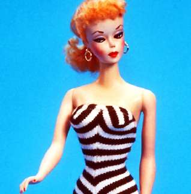

Борис Акунин
Мой календарь
Мужчины не были бы такими коварными и двуличными, если бы на следующий же день после 8 марта, усыпив бдительность сладкими речами, не нанесли по женщинам шовинистский контрудар.
9 марта 1959 года на Американской международной ярмарке игрушек состоялась презентация куклы Барби, которая (не вполне незаслуженно) считается инструментом оболванивания девочек, загоняющим их в традиционный стереотип «удобной женщины».
Конечно, для большинства детей это была просто красивая игрушка, которую занятно переодевать в разные наряды. Но в возрасте, когда у маленького человека формируются вкусы, модели поведения, фобии и комплексы, идеал красоты в виде густо накрашенной, невозможно тонкой в талии дурехи, очень многим потом искалечил жизнь. Существует даже термин «синдром Барби» - когда девушка изводит и изнуряет себя, чтобы соответствовать фигуре прославленной куклы (это физически невозможно).
А кроме того не всё с куклой было так уж безобидно. Ее создатели с простодушием тогдашней эпохи признавались, что хотели подготовить девочек к взрослой жизни. Из чего она должна была, по их мнению, состоять? Из нарядов, причесок, косметики и выбора правильного Кена.
Сегодня, 9 марта, мужчины должны каяться и обещать, что не будут Кенами, а женщины могут презирать тонкую талию и нарушать гендерные стереотипы.
Такой уж это день.